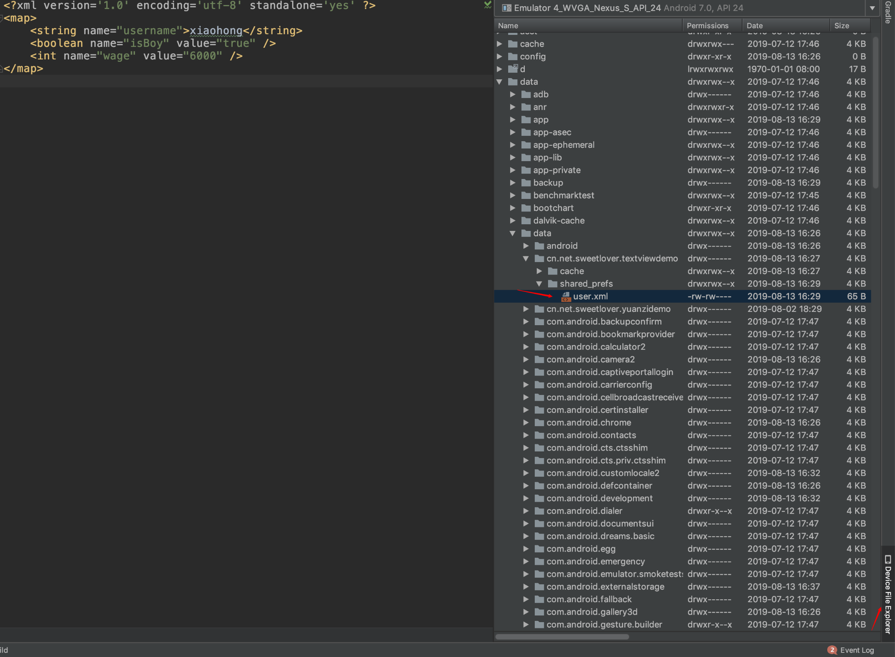

Sharedpreferences是Android平台上一个轻量级的存储类，用来保存应用程序的各种配置信息，其本质是一个以“键-值”对的方式保存数据的xml文件，其文件保存在/data/data/${pkg}/shared_prefs目录下。在全局变量上看，其优点是不会产生Application 、 静态变量的OOM（out of memory）和空指针问题，其缺点是效率没有上面的两种方法高。SharedPreferences实现是线程安全的，但不是进程安全的。
获取SharedPreferences
使用 SharedPreferences 来存储数据，首先需要获取到 SharedPreferences 对象。Android中主要提供了两种方法用于得到 SharedPreferences 对象。
Context 类中的 getSharedPreferences()方法：
此方法接收两个参数，第一个参数用于指定 SharedPreferences 文件的名称，如果指定的文件不存在则会创建一个，第二个参数用于指定操作模式，主要有以下几种模式可以选择。MODE_PRIVATE 是默认的操作模式，和直接传入 0 效果是相同的。MODE_WORLD_READABLE 和 MODE_WORLD_WRITEABLE 这两种模式已在 Android 4.2 版本中被废弃。
- Context.MODE_PRIVATE：为默认操作模式,代表该文件是私有数据,只能被应用本身访问,在该模式下,写入的内容会覆盖原文件的内容；
- Context.MODE_APPEND：模式会检查文件是否存在,存在就往文件追加内容,否则就创建新文件；
- Context.MODE_WORLD_READABLE：表示当前文件可以被其他应用读取；
- Context.MODE_WORLD_WRITEABLE：表示当前文件可以被其他应用写入；
PreferenceManager 类中的 getDefaultSharedPreferences()方法：
这是一个静态方法，它接收一个 Context 参数，并自动使用当前应用程序的包名作为前缀来命名 SharedPreferences 文件。[已废弃]
SharedPreferences的使用
SharedPreferences对象本身只能获取数据而不支持存储和修改,存储修改是通过SharedPreferences.edit()获取的内部接口Editor对象实现。
存储数据
1 | SharedPreferences sp = getSharedPreferences("user", Context.MODE_PRIVATE); |
读取数据
1 | SharedPreferences sp = getSharedPreferences("user", Context.MODE_PRIVATE); |
删除指定数据
1 | SharedPreferences sp = getSharedPreferences("user", Context.MODE_PRIVATE); |
清空数据
1 | SharedPreferences sp = getSharedPreferences("user", Context.MODE_PRIVATE); |
注意：如果在 Fragment 中使用SharedPreferences 时，需要放在onAttach(Activity activity)里面进行SharedPreferences的初始化，否则会报空指针 即 getActivity()会可能返回null ！
读写其他应用的SharedPreferences
1. 在创建SharedPreferences时，指定MODE_WORLD_READABLE模式，表明该SharedPreferences数据可以被其他程序读取；
2. 创建其他应用程序对应的Context；
3. 使用其他程序的Context获取对应的SharedPreferences；
4. 如果是写入数据，使用Editor接口即可，所有其他操作均和前面一致；
1 | try { |
SharedPreferences.Editor对象中commit和apply的区别
- apply没有返回值而commit返回boolean表明修改是否提交成功 ；
- commit是把内容同步提交到硬盘的，而apply先立即把修改提交到内存，然后开启一个异步的线程提交到硬盘，并且如果提交失败，你不会收到任何通知。
- 所有commit提交是同步过程，效率会比apply异步提交的速度慢，在不关心提交结果是否成功的情况下，优先考虑apply方法。
- apply是使用异步线程写入磁盘，commit是同步写入磁盘。所以我们在主线程使用的commit的时候，需要考虑是否会出现ANR问题。（不适合大量数据存储）
查看Sharedpreferencesd 保存数据的xml文件
模拟器下直接打开打开AS，找到窗口右下角的Device File Explorer进行查看：

真机环境下需要root。